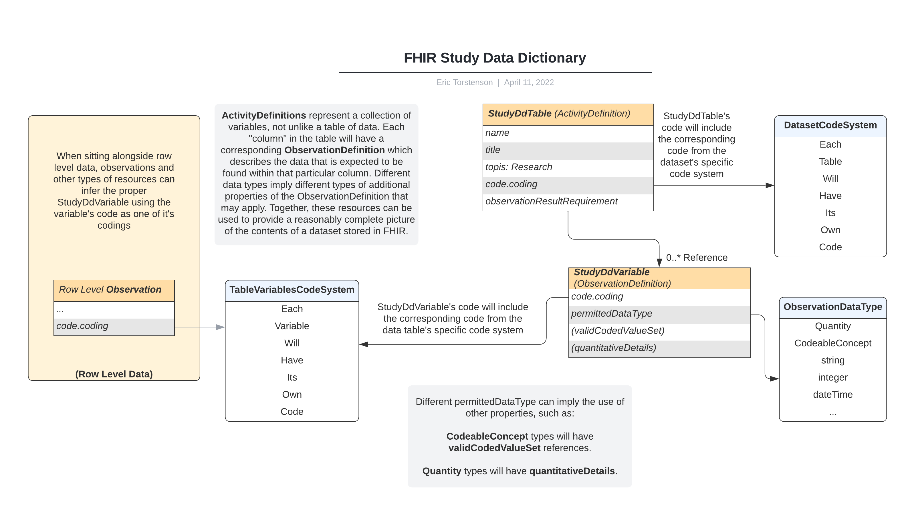

NCPI FHIR Implementation Guide
0.2.0 - ci-build
NCPI FHIR Implementation Guide - Local Development build (v0.2.0). See the Directory of published versions
The data-dictionary acts as the key to the dataset itself. Traditionally, this file is delivered alongside the data itself as flat files that contain column names, descriptions along with other details to help the individuals doing analysis to understand how they are expected to use the data. FHIR provides descriptive resource types that can be used for the purposes of describing the variables that are found within a given dataset even more completely than many data-dictionaries themselves.

There should be no identifiable data contained within the data-dictionary resources and as such, these should be well suited to be hosted on an unrestricted server even if the dataset itself is restricted. However, even if there is a public server hosting a given study’s metadata, it still may be advisable to provide the metadata alongside the data itself for the convenience of those using the data, especially if the data itself has not been fully transformed into an interoperable form.
CodeSystems should be defined for each dataset enumerating the following:
Together, these CodeSystems provide a highly specific vocabulary with terms that can be dropped into any appropriate Coding in the various transformed resources to provide linkage between the transformed data and the original source of the data.
For each variable contained within the dataset, a Study Data Dictionary Variable should be defined describing in as great of detail as possible. At a minimum, there should be the data type (permittedDataType), the variable’s entry from the table’s CodeSystem (code) and a corresponding reference to a ValueSet (validCodedValueSet) when the variable represents an enumerated data type. Additional details are helpful but are data type specific such as the units associated with a Quantity data type, numeric type limits, etc.
The Study Data Dictionary Table itself is a simple container where each of the table’s variables are referenced in the observationResultRequirement property. It too should have the appropriate vocabulary referenced from the dataset’s code system for it’s topic.
Data harmonization is one of the fundamental objectives when it comes to loading these data into FHIR and a key aspect of that is the use of common vocabularies across all datasets when possible. FHIR provides the resource type, ConceptMap, to provide maps from one CodeSystem to another.
For the purposes of representing the data-dictionary in FHIR, the concept map can help document the transformations that took place during the ingestion process. Column X from table Y is mapped to Coding Z from Ontology A. By providing a complete mapping of all public terms that were identified during loading, we get the advantage of:
For the example, a simple dataset contains 5 variables, subjectid, gender, age_at_enrollment, bmi and status all of which are mapped to UMLS terms. For BMI, there is an additional mapping to a LOINC term. Finally, the status variable is mapped to 1 entry from Human Phenotype Ontology term and 2 Mondo terms.
TBD
Summary data provides researchers the information they need to understand what data is available and whether that data is suitable for their specific needs. This data can be harmonized with public ontologies allowing researchers to use common ontological terms to search for datasets that have the numbers suitable for their objectives in sufficient numbers. By providing the summary data in FHIR, researchers can use FHIR capable tools or work directly in FHIR to discover the datasets of interest and, once access has been granted, pull the data down for analysis using the same core framework.
While most, if not all, of the summary data itself could be collected directly using FHIR’s REST API, doing so would require access to the row level data. One of the big advantages of summary data is to provide those without current access to the data the information to decide if the study contains data suitable to their research needs in order to make an informed decision about whether or not to apply for access, should the data be restricted.
To support summary information in FHIR, NCPI provides two resources: The Study Summary and the Study Variable Summary.
Based on the FHIR Observation, the study summary provides a single resource to summarize a single Study Group associated with a particular study. This may be the entire study population, or it may be a single subgroup, such as a consent group. The resource itself has 1 or more components describing each of the elements being summarized. These components consist of a code describing what is being summarized, such as the “Number of Cohorts” or “Mean Age of Enrollees” and a value, generally an Integer or Floating point number containing the value of interest. There can be many components associated with a single Summary observation.
Based on the FHIR OBservation, the study variable summary provides summary of a single variable within the dataset for a specified population. The summary information for this variable would be contained as entries in the component array. The contents of these entires is dependent on the variable’s type. For instance, a variable whose contents are enumerations of a list of possible values, such as Race, would provide the count for each possible enumeration as well as total count and the number of missing. However, for numeric values, there might be minimum and maximum observed values, mean, total N observations and missing count.
Codes are a fundamental mechanic for relating things across different resources. To that end, there should be CodeSystems to represent the dataset, its tables and the variables’ enumerations.
A single CodeSystem should be defined containing a code for each of the tables that make up the dataset.
Each table itself will be represented as its own CodeSystem where each variable represented in FHIR will have a corresponding code.
Based on the FHIR ResourceType, ActivityDefinition, The data table represents a single table within the dataset and contains references to the individual data variable details.
Some key parameters that can help identify the table and provide context and necessary clarity on the table’s purpose would be:
One of the code.coding properties should point to the table’s Code from with the dataset’s Table CodeSystem.
Individual variable definitions will be attached as references within the observationResultRequirement property.
Data variables describe a single column within the data table. The descriptive components used will depend on the type of data represented in the variable itself and maybe be very simple (basic string data), or moderately complex, depending on the data that is known about the variable itself.
To associate a given variable to it’s specific entry in a data-table, one of its code.coding properties should point to the corresponding variable from the table’s CodeSystem. This same code can be used throughout resources that are produced as a result the data from this variable.
One fundamental aspect of a good data dictionary is a comprehensive description of the data that can be expected to be found within each individual variable. This can be defined using proper codes for the permittedDataType and relevant secondary properties.
Strings, boolean values and integer all represent very simple data types that can be expressed, possibly with no additional details, though, in some cases, additional details may also be permitted (such as a min/max range for an integer value, or possible a ValueSet containing the codes that can be found for special cases).
For Quantity, Integer and any other type that can be bound within a range, this should be specified using qualifiedInterval[x].range (or age/gestationalAge should those be more appropriate).
For quantities and any other data type that needs to be accompanied with a unit, this should be specified using quantitativeDetails.unit.
When specifying that a variable should consist of a value from a list of possible values, a reference to a ValueSet containing all possible values should be given for the property, validCodedValueSet.
Based on FHIR’s ConceptMap, the StudyDataDictionaryHarmony should be used to indicate any transformations from the values pulled directly from the source data to terms from public ontologies such as LOINC, HPO, Mondo, etc.
The StudySummary is a refinement of FHIR’s Observation and has “components” indicating each summary values. Each Summary observation has a single “subject” which indicates the population being summarized.
The StudyVariableSummary is similar to the StudySummary above, except it contains summary information specific to a single variable. Each Summary observation has a single “subject” which indicates the population being summarized.